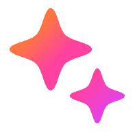

20:00
12'宝宝今天的体重是9.3公斤，大女儿今天第一次来月经。血量挺多的，我今天挺担心的。

记录保存中...女儿月经来了血量
我心情
宝宝体重
近7天心情整体在往好的方向走，状态在慢慢变好，卵泡期雌激素正在回升，身体和情绪一起在向上走。
20:00
12'宝宝今天的体重是9.3公斤，大女儿今天第一次来月经。血量挺多的，我今天挺担心的。

记录保存中...近7天心情整体在往好的方向走，状态在慢慢变好，卵泡期雌激素正在回升，身体和情绪一起在向上走。
可通过右上角按钮触发输入交互